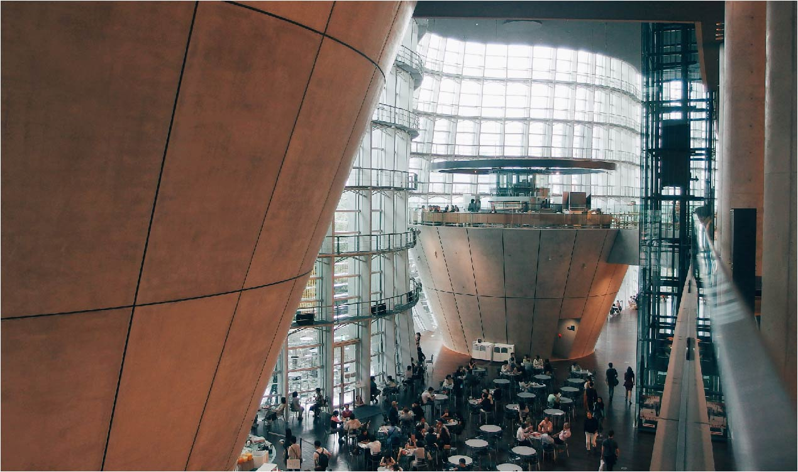

Visit

Location
Address:
Museumgata 1
0123 Oslo
Mon
Tue
Wed
Thu
Fri
Sat
Sun
Closed
10-16
10-16
10-16
10-19
9-16
9-13

Admission
The entrance is free for all.
There are guided tours of the museum that leave every hour — they include a handy printed guide of the museum and are kr. 70,- per person.
If you would like to organize a guided tour for six or more people, please contact us.
Café and shop

There is a café attached to the museum where you can get light lunches, soft drinks, coffee, snacks and more.
Our shop offers a range of memorabilia from the museum, as well as great gifts for friends and family.
Accessability
The museum has wheelchair accessibility ramps. It also has audio guides and braille display signs for the visually impaired.
If you need more information or have any questions, please contact us.